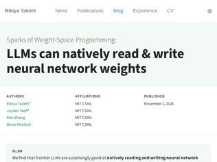
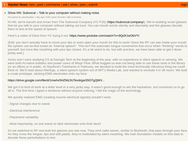
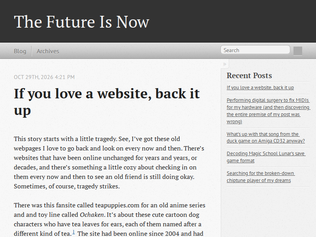
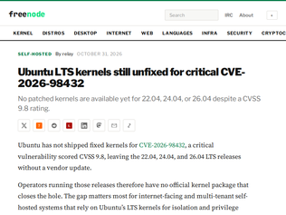
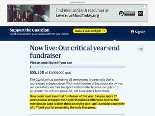

"Respectfully to the authors and to everyone here, I ask you to actually read the paper before losing your mind, or at the very least plug it into Claude. It is a cool project but not as nearly as insane as people say. I think the blog writing and subsequent posting overstate the results.Part of my research is in weight space learning. For starters, we have had the ability to edit weights, to generate new weights, to identify weights for a while. Here is an example for larger models as early as 2023: https://rome.baulab.info/Weight space interpretability and learning is an active research community, has been for the past 3 years with many great papers. I suspect it is hitting non-interp folks harder because the authors hyped up their work, and people who are not in the field did not bother to read it before typing up X posts.Some experiments here are done on very small models (20K params). We already know that small models are more interpretable. In fact, much of editing here you can do by hand. For Qwen, the model fixed a looping bug that may have been known apriori, and it is basically a steering vector, a very established technique. This is clear when they then attempt to "improve" math capability, and it doesn't work. For me, this paper rather shows that OpenAI has done training on mechinterp environment, in fact, maybe even on weight space learning datasets, which are open. But it does not show some insane "well past what we’d expect from humans or conventional algorithms" (from the blog post), more like past what I would expect from a large model with no specialized harness. I still think it is cool work, but do check out recent advances in autointerp, to ground your expectation.On a personal note, I understand the need for promotion of your work, but I think healthy skepticism is fine too. Otherwise, your understanding of what problems need to be worked on and solved in science becomes warped."
"This is insane.Astra can, without tooling, determine what games small networks are trained on, can edit the weights of networks directly to improve outcomes, and can hand edit a small qwen model to improve its math skills by like 5x.I'm shook. If you'd asked me this morning whether LLMs have native understanding of their weights that is less than human <-> neuron understanding, the same as human or more than human, I would have said "same to less" depending on definitions.No human can go edit a brain to become better at math. This is just very, very surprising to me and extremely interesting. I would guess this upsets quite a number of interp theories and philosophical takes on what's going on with these networks."
"And here we go...As others have said, while still absolutely insane, I don't find it completely out-of-the-blue surprising. One of the recurring abilities of (current-generation) LLMs seem to be to rapidly grasp very complex systems, where humans would need months or years to reach the same level of expertise.You can see this in the way a coding agent can "understand" and explain sprawling legacy codebases in seconds.You can also see it in the projects that are using them to reverse-engineer proprietary IoT protocols or computer games.But those were all systems where we had detailed knowledge about what structures are there to be reverse-enginered.If the models can transfer this ability to some other systems where we don't know the underlying structure then I think we will be in for a lot more craziness in the future. (Protein interaction networks? DNA sequences? Ecosystem interactions? Animal languages?)As for weights, if the models really can analyze the semantics behind specific weights or directions, I have my hopes that they could also give a textual explanation or help designing tools to make "handcrafting" weights more practical in general."
"Worse yet, the Ubuntu security incident page[0] lists "Ubuntu Priority: High" (as opposed to Critical, which would trigger an out-of-schedule patch). There's a "Why this priority?" link that simply says:> Why is this CVE high priority?> See ubuntu cvss scoreThat's it, we don't even get a period on this TBD of a sentence. It's followed by a generic link that explains what "Ubuntu Priority" is, but that page contradicts their choice. Note that it doesn't offer any mitigations either, and even the (horrendously unclear) description is copied from the NIST page, so there's no actual message from Ubuntu.I already had a bad feeling the first time I saw "Get more security updates through Ubuntu Pro" on `apt upgrade`, this is now the kick I needed to move to a different distro.[0] https://ubuntu.com/security/CVE-2026-98432#priority-reason"
"For the record, the kernels with the fixes are in the "proposed" repos for each LTS release:* https://launchpad.net/ubuntu/+source/linuxYou can pull them down with a "-t" added to your apt-get (but will not appear by default).26LTS had the new kernel go to the updates/security repos on October 28."
"It’s okay to have criticism, but at least be constructive about it. This “I demand to speak to the manager” energy should be kept out of open source.The post gives no details about what this vulnerability is, how critical it is, how it is impacting them personally, how vulnerable their servers are, how they are working around it.Just a title designed to generate the maximum outrage followed by a few meaningless lines."
"- Buy an LG OLED TV. They're as gorgeous as they are notorious. I just got a 77" LG C6 and it is crazy good.- Root it [0].- Install Glasshouse [1] and disable all telemetry. YOU now own the glass. Now you can chromecast to the TV, use Adfree YouTube, access IP TV, etc etc etc. No point crippling your TV by pulling the wireless module and voiding your warranty.- Install a bunch of cool apps to your TV [2] (there are many more out there besides those listed here)- Restore to Factory Defaults if you ever want / need to unroot and get back to stock e.g. a warranty claimThe only issue is that LG recently closed the vulnerability that made rooting possible so you don't want any firmware released after 2026-10-10 like 43.21.84. Hopefully a new exploit is found that makes rooting possible once again.BTW, you might have heard of Dev Mode on these TVs but they don't allow anywhere near the functionality that rooting provides.[0] https://tv.slada.sk/guides/rooting-guide[1] https://github.com/rorygallagher2024/glasshouse[2] https://www.webosbrew.org/"
"Buy any tv with CEC support (almost all of them) and never connect it to the internet. Never. Never start any app on the tv. Hook a Kodi box to the hdmi port and use that, and only that.For the Kodi box get series-7 Intel NUC with Kabylake-era processors, gen 7. They don't run Windows 11, so come very cheap second hand, but decode h264 and hevc in hardware and drive a 4K screen like charm. You can install a modern Wifi card in the NUC and a PCIe SSD.Then buy one of these: https://www.pulse-eight.com/p/154/intel-nuc-hdmi-cec-adapter and put it in your NUC, so you can use the TV remote to control Kodi.That's it.Bonus, you can take your TV with you when travelling."
"Recently I've had to deal with this same problem - get a new TV for living room. Personally, I do not watch TV at all, but kids want to see cartoons when having their breakfast. I spent a week reading forums and came to conclusion that best solution would be to buy a "dumb TV" and connect it to a PC I trust, but it appears there are no dump TVs in my rage of 55" and larger. So, I bought "Google TV" based TCL.When I brought it home, I never connected it to Ethernet or WiFi. Instead, I connected it to my laptop over USB, then using adb I uninstalled almost every application from it. It took me quite some time to figure out what app is possible to remove and what should be kept to let TV functionality to work. I even had to factory-default it a couple of times because some random apps I removed were crucial for Android to work. :) I think it took me 5-6 hours to clean it. Now it has only basic TV functionality like any dump TV does, I can watch air and cable TV channels, watch movies and play music from USB storage. If there's a need to watch something online, I connect it over HDMI to my small mini-PC that runs FreeBSD. I think I'm satisfied with the result. :-)PS: Yesterday I opened the case and disconnected WiFi antenna. Just in case."

"Just preordered -- glasses request: there's no way to say it nicely, I have a big nose. With a high bridge. Many glasses are really tough to get properly placed; may I request you not give up on the pads w/metal adjusters that you have in the product photos? Don't let a designer take them away from you, us folks not one standard deviation from 'normal' noses will thank you.Second, how tough is this signal processing? Will it be done on-glasses, or through an app? Third, what's the equivalent of a wake word for these? I'm reminded of the Apple Vision Pro radar to see if your fingers are clicking. I could imagine a lot of modalities where I want to just start talking and have things happen, and a lot where I don't want the glasses to pick it up. Fourth, I think a cool voice change demo would be rad -- not sure what latency is like, but if you could get it end to end under like 250ms you could probably have someone exaggerate the mouth movements and pipe out audio of them talking like someone else. Which would be another really cool demo.Super cool. You're going to be working 80 hour weeks for the next year, I'm excited to see what you put out!"
"If the tech is mostly in the glasses temples, I would prefer to have something that attaches to my existing glasses. I have prescription glasses and a big head, tried the Even G2 smart glasses and the available frames set just too small for me"
"I think this is incredibly cool and straight out of a sci-fi novel! I think this is phenomenal for accessibility and for hands-free computing in general. I also agree with other comments that the website should have more detail on how it works, such as what you included in the post body. Amazing work guys!"
"It upsets me somewhat that they’re protesting things like lock-in only after being laid off, while beforehand they were the ones implementing them.I do like the paradox (oxymoron?) of being made redundant with AI, so they’re using AI to render their former companies redundant.But in the end it pushes for more AI software; I’m not sure who wins."
"The mistake is thinking the first S is what people pay for when it is the second S."
"This seems like it’s trying to reinvent the idea of FOSS. There’s already tons of FOSS alternatives to big tech SaaS and there’s lots of tech coops and other venues for tech activism. Why not support one of those ventures or build a platform to help amplify them?Also odd to advocate for control of tech only to cede the entire project to AI."

"Wholeheartedly agree. It's sad to slowly see the bitrot in my own bookmarks, trying to pull up important resources or media from only a few years ago only to hit a 404 or domain placeholder. And many times there is nothing on Archive.org or similar.That ArchiveWeb extension looks excellent for custom captures. Picking the pages and elements you want during capture is a great feature.For quicker one-offs, SingleFile gives you a single HTML with all the media of a page: https://www.getsinglefile.comIf you're making archiving a more involved part of your workflow, I highly recommend ArchiveBox. It can save pretty much every type of file from everywhere, in almost every format you can imagine, while building a searchable index of the archives. Been using it successfully for many years: https://archivebox.io"
"I agree sorta, but maybe its best to just let things go."
"In 5 years, cloud LLMs may have largely replaced the open Internet as a source of information, with centralized control and ability to rewrite the past.Please, please buy books and keep them in good condition, and please archive websites with important information (assuming it's legal in your jurisdiction). There are still plenty of excellent sites and blogs around from the 2000s and even earlier, but they won't be there forever. Ironically, coding agents have made archival much easier -- I've always found problems with using pre-written tools, but Claude or Qwen make it trivial to download, test, and archive sites on your local."
"> One of my pet peeves with the web development community is that so many of the decisions we make are vibes-based. ... All of this breathless boasting is usually offered with zero evidenceAI aside, this is something that bothered me a lot when I was forced to migrate from pure native mobile (swift) to React Native.People would take the promotional talk of some SDK as truth without ever measuring and then being confused on why the whole app was slow (it CANNOT be XYZ, because XYZ developer says the are super fast!!)Luckily my team was able to accept when I provided hard data (said framework was locking the JS thread for 200ms, sometimes a full second, for some operations, which rendered the all the UI laggy as hell)."
"Besides a rewrite to another framework using AI, another option is to modernize the framework with AI instead. Personally, I started to like Mithril after having worked with it for a few years. Instead of rewriting it to a better maintained alternative (mithril doesn't have much active development going on since 2015), I used agents to add signals, proper state management, typing, ssr, computed properties, Bun tooling and more to it. Thanks to the existing test suite, changes landed quite reliably. Source: https://code.garage44.eu/jeroen/mithril"
"This benchmark is too simplified to be meaningful. The choice of a framework is rarely based on speed alone, it factors in other elements like the user's domain knowledge, long term maintainability and the framework's track record itself w.r.t security and development of features.In this regard alone, it will make a lot of sense to spend extra $2 and 2 mins to trade off for a long-term maintainable codebase and code you can reason about than just something made quickly just to get it deployed fast.In my personal use case, that would be Svelte 5 for me and I'm sure it will be something else for everyone."

"I find it odd that no public discussions are highlighting that iptables or nftables can drop this before the kernel CVE is exploitable by a U32 drop rule in raw PREROUTING...sudo iptables -t raw -I PREROUTING -p tcp -m u32 ! --u32 "0>>24&0x0F=5" -j DROP"
"It's rather uninteresting to note, once again, that Ubuntu has decided to do this. I would like to know the (official, if any - unofficial/speculative otherwise) reason WHY they have not.It does not seem that complicated to patch, and kernel upgrades are a dime a dozen these days. So what is making them delay a fix for so long?"
"Question:Every consumer router-wirelessAP I've seen runs linux.I never see security upgrades for the kernels they use. Not one. Not ever.Is this something that should be a cause for concern? Even if you don't run a consumer-grade tplink, netgear, asus, whatever router yourself.Update: The context which I should have said is that I think LLMs are giving script kids nation state level tools and expertise. This known bug is always less interesting than the next twenty."
"> To me, someone who chooses a worthwhile problem, obtains a proof completely using AI, understands it thoroughly, and uses it to develop interesting further questions or directions has made a substantial mathematical contribution. I would give that person substantial credit even if they supplied no new ingredient in the original proof.Yup. This is what Terence Tao has been saying about digestion of results for several months now. Mathematics has become a field where results themselves matter less, the social aspect of attracting others to understand your results and explore new problems has become more important.In a sense it is a little bit like software engineering, where writing code can sometimes be delegated to AI, and is arguably less important than understanding what the customer really wants from this software."
"I really struggle to understand this discussion. Mathematics isn't a way to keep a specific kind of intellectual happy by providing fun, meaningless puzzles to solve in isolation. It's the bedrock of all other science. The goal is to find solutions and to advance the field - but we seem to be treating it like some sort of occupational therapy for bored geniuses.As we solve lower level problems, we can unlock real world math solutions. Stellerator Design, Quantum error correction, Predictive superconductivity, Inverse protein and enzyme design - the list goes on. Many solutions AI can find can bring us closer to these - so let's fire up whatever datacenter we can find and get us to these outcomes."
"Isn't it the passage of mathematics from the age of craftsmanship to the age of industrial making ?My recent take on AI is that people haven't adapted to the new huge potential of the tool, and don't dream big enough (yet).It's like seeing a car engine for the first time, lamenting about the future of horses, and not realizing it'll also help us fly."

"As I mentioned in the thread regarding the previous attacks, I worked in a closely related field back in 2008-2009.One thing I see repeatedly brought up here in this discussion is "Why can't we just set the refrigerator temperature with a knob and walk away?"The problem is that these refrigerator cases are not as simple as your refrigerator at home. As a simple example, many systems allow you have control over the deadband: the exact low temperature at which the compressor turns off and the high temperature at which the compressor turns back on. You also have control over defrost cycles, compressor pressure and many other things (I worked with this a long while ago, and I don't remember all the details).Take a look at some of these manuals, for example: https://www.hillphoenix.com/resource/installation-manuals-2/... As far as I can tell, those manuals just cover the refrigerator cases, and not the outside compressors and heat exchangers, which are another layer to deal with.This is not something that a non-expert supermarket employee would be able to handle well. The purpose of all these settings is optimize around energy usage, maintenance costs, customer experience, etc. Even if you only save $500/store/year, you can see that it really adds up over a chain of 1000 stores.That's why this equipment is remotely accessible: it's not like your fridge at home and requires a lot more knowledge to get the most out of it. Of course, that does not excuse poor security implementations."
"Bless those hackers for firing a warning shot over our freezers, that we may take heed and secure our neonatal care units, stoplights, and air traffic controllers."
"I'm extrapolating a bit here based on Reddit hearsay, but I think this may have to do with rural stores having essentially consumer-grade internet routers connected to the mobile broadband network.Much of the coverage in Swedish media drives the point that only 4G-uplinked stores have been hit so far. I think that's unfortunate, because really it wouldn't have differed if these stores were connected by 5G.I'm guessing here, but my money would be on freezer ICS systems being made available to the world by accident by way of NAT-PMP on a consumer router. In Scandinavia you can bypass CG-NAT on mobile connections by setting a particular APN, so my guess is that these control systems were simply findable on Shodan.This also explains why this wasn't discovered after the recent French breach. Supposedly all the stores with "proper" uplinks were in compliance, and no one had thought of a way in for those non-compliant stores, because they "weren't even connected, so how would an attacker get in?""
Astra can read and write weights to improve Qwen
"Respectfully to the authors and to everyone here, I ask you to actually read the paper before losing your mind, or at the very least plug it into Claude. It is a cool project but not as nearly as insane as people say. I think the blog writing and subsequent posting overstate the results.Part of my research is in weight space learning. For starters, we have had the ability to edit weights, to generate new weights, to identify weights for a while. Here is an example for larger models as early as 2023: https://rome.baulab.info/Weight space interpretability and learning is an active research community, has been for the past 3 years with many great papers. I suspect it is hitting non-interp folks harder because the authors hyped up their work, and people who are not in the field did not bother to read it before typing up X posts.Some experiments here are done on very small models (20K params). We already know that small models are more interpretable. In fact, much of editing here you can do by hand. For Qwen, the model fixed a looping bug that may have been known apriori, and it is basically a steering vector, a very established technique. This is clear when they then attempt to "improve" math capability, and it doesn't work. For me, this paper rather shows that OpenAI has done training on mechinterp environment, in fact, maybe even on weight space learning datasets, which are open. But it does not show some insane "well past what we’d expect from humans or conventional algorithms" (from the blog post), more like past what I would expect from a large model with no specialized harness. I still think it is cool work, but do check out recent advances in autointerp, to ground your expectation.On a personal note, I understand the need for promotion of your work, but I think healthy skepticism is fine too. Otherwise, your understanding of what problems need to be worked on and solved in science becomes warped."
"This is insane.Astra can, without tooling, determine what games small networks are trained on, can edit the weights of networks directly to improve outcomes, and can hand edit a small qwen model to improve its math skills by like 5x.I'm shook. If you'd asked me this morning whether LLMs have native understanding of their weights that is less than human <-> neuron understanding, the same as human or more than human, I would have said "same to less" depending on definitions.No human can go edit a brain to become better at math. This is just very, very surprising to me and extremely interesting. I would guess this upsets quite a number of interp theories and philosophical takes on what's going on with these networks."
"And here we go...As others have said, while still absolutely insane, I don't find it completely out-of-the-blue surprising. One of the recurring abilities of (current-generation) LLMs seem to be to rapidly grasp very complex systems, where humans would need months or years to reach the same level of expertise.You can see this in the way a coding agent can "understand" and explain sprawling legacy codebases in seconds.You can also see it in the projects that are using them to reverse-engineer proprietary IoT protocols or computer games.But those were all systems where we had detailed knowledge about what structures are there to be reverse-enginered.If the models can transfer this ability to some other systems where we don't know the underlying structure then I think we will be in for a lot more craziness in the future. (Protein interaction networks? DNA sequences? Ecosystem interactions? Animal languages?)As for weights, if the models really can analyze the semantics behind specific weights or directions, I have my hopes that they could also give a textual explanation or help designing tools to make "handcrafting" weights more practical in general."